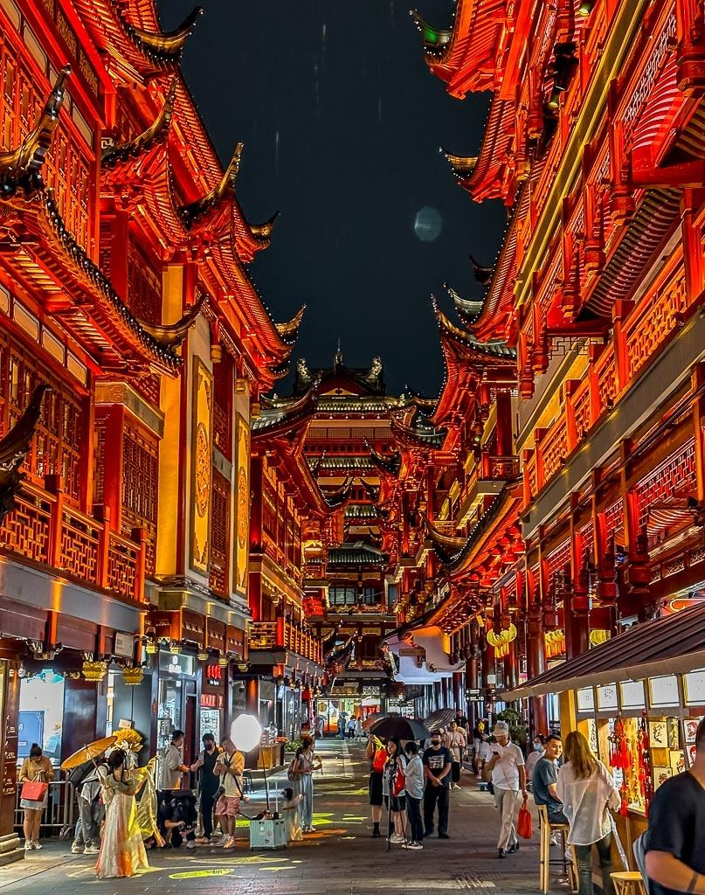

Culture and Traditions:
China is home to a long and rich cultural history that includes ancient philosophies such as Confucianism and Daoism, traditional festivals, and unique art forms. Visitors will learn about customs like the Chinese New Year celebration, the Mid-Autumn Festival, and traditional Chinese tea ceremonies. The site will also introduce Chinese arts, such as calligraphy, opera, and martial arts (Kung Fu and Tai Chi), which continue to influence modern Chinese culture today.
Chinese cuisine is renowned worldwide for its depth of flavor, variety, and the importance placed on balance and harmony in meals. The website will highlight regional differences in Chinese food, such as Cantonese, Sichuan, and Beijing cuisine, focusing on signature dishes like Peking duck, dim sum, hotpot, and dumplings. Visitors will learn about the cultural significance of food in Chinese society, including the importance of food in family gatherings and festive celebrations.
Landmarks and Attractions:

China is home to some of the most iconic landmarks in the world, including the Great Wall, the Forbidden City, the Terracotta Army, and the Yangtze River. This section will explore the historical and cultural significance of these sites, as well as more modern attractions such as the Shanghai skyline and the Beijing National Stadium (Bird’s Nest). Visitors will gain an appreciation for China’s vast history, ancient architectural marvels, and cutting-edge urban development.